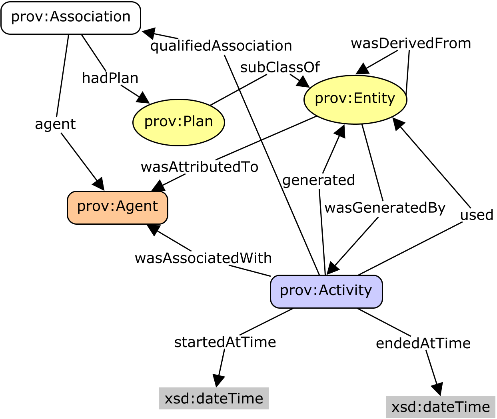

The Semantic Sensor Network (SSN) ontology is an ontology for describing
sensors and their observations, the involved procedures, the studied features of
interest, the samples used to do so, and the observed properties, as well as actuators.
SSN follows a horizontal and vertical modularization architecture by including a
lightweight but self-contained core ontology called SOSA (Sensor, Observation, Sample, and
Actuator) for its elementary classes and properties. With their different scope and different degrees of axiomatization, SSN and SOSA are able to support a wide range of applications and use
cases, including satellite imagery, large-scale scientific monitoring, industrial and
household infrastructures, social sensing, citizen science, observation-driven ontology
engineering, and the Web of Things. Both ontologies are described below, and examples of
their usage are given.
The namespace for SSN terms is http://www.w3.org/ns/ssn/.
The namespace for SOSA terms is
http://www.w3.org/ns/sosa/.
The suggested prefix for the SSN namespace
is ssn.
The suggested prefix for the SOSA namespace is sosa.
For OGC this is a Public Draft of a document prepared
by the Spatial Data on the Web Working Group (SDWWG)
— a joint W3C-OGC project (see charter).
The document is prepared following W3C conventions. The document is
released at this time to solicit public comment.
Introduction
Sensors are a major source of data available on the Web
today. While sensor data may be published as mere values, searching, reusing, integrating, and interpreting these data requires more than just the observation results. Of equal
importance for the proper interpretation of these values is information
about the studied feature of interest, such as a river, the observed
property, such as flow velocity, the utilized sampling strategy, such as
the specific locations and times at which the velocity was measured, and
a variety of other information. OGC's Sensor Web Enablement standards
[[OandM]], [[SensorML]] provide a means to annotate sensors and their
observations. However, these standards are not integrated and
aligned with W3C Semantic Web technologies and Linked Data in
particular, which are key drivers for creating and maintaining a global
and densely interconnected graph of data. With the rise of the Web of
Things and smart cities and homes more generally, actuators and the data
they produce also become first-class citizens of the Web. Given their
close relation to sensors, observations, procedures, and features of
interest, it is desirable to provide a common ontology that also
includes actuators and actuation. Finally, with the increasing diversity
of data and data providers, definitions such as those for sensors need
to be broadened, e.g., to include social sensing. The following
specifications introduce the new Semantic Sensor Network (SSN) and
Sensor, Observation, Sample, and Actuator (SOSA) ontologies that are set
out to provide flexible but coherent perspectives for representing the
entities, relations, and activities involved in sensing, sampling, and
actuation. SOSA provides a lightweight core for SSN and aims at broadening
the target audience and application areas that can make use of Semantic Web ontologies.
At the same time, SOSA acts as minimal interoperability fall-back level, i.e.,
it defines those common classes and properties for which data can be safely
exchanged across all uses of SSN, its modules, and SOSA.
Modularization
Practitioners using the original Semantic
Sensor Network Ontology as defined in the W3C Semantic Sensor Network Incubator Group [[SSNO]] have identified a major
issue in its complexity, partly due to the layering underneath the
Dolce-UltraLite (DUL) upper level ontology. In response to this, the new
Semantic Sensor Network (SSN) ontology offers several ontology subsets that
are distinguished mainly through their ontological commitments. This
section explains the rationale and method for modularizing SSN, i.e.,
offering several distinct ontologies that are similar in their domain of
discourse, but with different ontological commitments, suitable to
several use cases and target audiences. For example, SOSA is intended
to provide Schema.org-style semantic enrichment capabilities for
data repositories managed by an audience broader than typical ontology engineers,
while still ensuring interoperability with SSN-based repositories.
Ontology modularization is a common method used in ontology engineering
to segment an ontology into smaller parts. In general, ontology
modularization aims at providing users of ontologies with the knowledge
they require, reducing the scope as much as possible to what is strictly
necessary in a given use case. Two main categories of ontology
modularization can be distinguished.
The first category comprises those approaches that focus on the
composition of existing ontologies by means of integrating and mapping
ontologies, most commonly through owl:import statements.
OWL import has a direction from a dependent ontology to a dependency
ontology. Although import is transitive, knowledge is propagated in only
one direction. The importing ontology assumes all the meaning of the
imported terms used, by including all axioms relevant to the meaning of
these terms. However, the imported ontology does not capture any of the
semantics of the importing ontology.
The second category comprises of mapping approaches that aim to
partition and extract parts of ontologies as modules. These mapping
approaches are not necessarily directional, but most approaches of
ontology extraction rely on the directionality of the imported modules.
The main feature of an ontology module under the second category is that
it is self-contained, i.e., the module captures the meaning of the
imported terms used by including all axioms relevant to the meaning of
these terms. This means, that the result of certain reasoning tasks such
as subsumption or query answering within a single module should be
possible and result in the same answers without the need to access other
modules of the ontology.
Our modularization uses the first approach by composing the
ontology into several modules that use owl:import
statements, whereby we distinguish two methods depending on the
directionality of the segmentation: a vertical segmentation and a
horizontal segmentation.
The SOSA and SSN ontologies and their vertical and horizontal modules.
Vertical Segmentation
Vertical modules build upon each other, i.e., they directionally owl:import
lower level modules. Lower level modules are independent of their higher
level modules and logically consistent on their own.
For example, the Dolce-UltraLite Alignment Module imports the SSN
Ontology which itself imports the SOSA Ontology. However,
in reverse, neither SOSA nor SSN import the Dolce-UltraLite
Alignment Module. In fact, SOSA as the core, does not
import any other ontologies, which makes it truly independent of
vertical modules that add more expressivity and further ontological
commitments to the lightweight semantics of SOSA.
Note that higher level here is not to be confused with upper level
ontologies. Upper level ontologies are general knowledge ontologies that
can be directionally imported in many domains, whereas our definition of
higher level ontologies here refers to an ontology that extends one or
several ontology modules to capture a larger part of a knowledge domain
and/or combine knowledge domains.
Horizontal Segmentation
Modules that are horizontally layered may depend on each other, i.e.,
they may rely on the directional import of another horizontal module.
Only one horizontal module that is dependent on the SSN ontology is
presented in this specification, the Sample Relations Module.
Other ontologies that add domain-specific terms to SSN, but require the
import of SSN, can be considered horizontal modules.
Origins of SSN and SOSA
Here we briefly review the origins of SSN and SOSA, namely the initial
SSN version published by the W3C Semantic Sensor Network Incubator
Group [[SSNO]] and work on Sensor Web Enablement by the OGC. We
also highlight the most substantial changes made since the initial
release of the SSN ontology.
Starting in 2002, the OGC's Sensor Web Enablement initiative has developed
a generic framework for delivering sensor data, dealing with
remote-sensing, moving platforms, and in-situ monitoring and sensing.
The Sensor Observation Service defines a standard query interface for
sensor and observation data, following the pattern established by OGC
for their Web Services. The returned XML data conforms with the Sensor Model
Language [[SensorML]] and OMXML [[OMXML]], whereby the latter implements
Observations and Measurements [[OandM]].
SensorML and O&M are complementary viewpoints. SensorML
is 'provider-centric' and encodes details of the sensor along with raw
observation data. SensorML is self-contained and highly flexible. This
makes life easy for data producers but is demanding on consumers.
SensorML provides extensive support for serialization of numeric data arrays
and is particularly optimized for data that includes multiple parallel
streams that must be processed together. For example, the data collected
by cameras on airborne vehicles must be geo-referenced based on the
instantaneous position of the platform and orientation of the camera. In
contrast, O&M was designed to be more 'user-centric' with the target
of the observation and the observed property as first-class objects.
O&M works at a higher semantic level than SensorML, but only
provides abstract classes for sensors, features of interest and
observable properties, expecting the details to be provided by specific
applications and domains. O&M also provided a model for sampling,
since almost all scientific observations are made on a subset of, or
proxy for, the ultimate feature of interest.
The initial W3C Semantic Sensor Network Incubator Group ontology
(SSN) was built around an ontology design pattern called the Stimulus
Sensor Observation (SSO) pattern [[SSO-Pattern]]. The SSO was
developed as a minimal and common ground for heavy-weight ontologies
for the use on the Semantic Sensor Web as well as to explicitly
address the need for light-weight semantics requested by the Linked
Data community. The SSO was also aligned to the Dolce-Ultralite upper
ontology (DUL).
The new SSN described in this document is based on a revised and
expanded version of this pattern, namely the Sensor, Observation,
Sample, and Actuator (SOSA) ontology. Similar to the original
SSO, SOSA acts as a central building block for the SSN but puts more
emphasis on light-weight use and the ability to be used standalone.
The axiomatization also changed to provide an experience more related
to Schema.org. Notable differences include the usage of the Schema.org
domainIncludes and rangeIncludes annotation
properties that provide an informal semantics compared to the
inferential semantics of their OWL 2 counterparts. In line with the
changes implemented for the new SSN, SOSA also drops the direct DUL
alignment although an optional alignment can be achieved via the
SSN-DUL alignment provided in Section 6.1. SOSA is also more explicit than SSO in its support for virtual and human sensor. Finally,
and most notably, SOSA extends SSO's original scope beyond sensors and
their observations by including classes and properties for actuators
and sampling. SOSA also distinguishes between phenomenonTime and
resultTime.
Drawing on considerable implementation and application experience with SSN and sensor and observation ontologies more broadly, the new SSN and SOSA ontologies presented here are set out to address changes in scope and audience, shortcomings of the initial work, as well as new technical developments. The list below highlights the most important (but by far not exclusive) updates.
Addressing changes in scope and audience
The initial SSN was developed with ontology engineers in mind as the primary audience. Due to the widespread adoption of SSN, the increasing role of citizen science, the strong focus on lightweight vocabularies by the Linked Data community, and vocabularies such as Schema.org, the ontology was streamlined. SOSA is added as a core, and is also useful as a standalone ontology targeting Web developers, citizen science, lightweight Linked Data publishing, resource-constraint IoT devices, data intensive applications (with the possibility of using lightweight reasoning), and so on. The new SSN introduces additional classes and relations on top of SOSA to model the capabilities of sensors and actuators, the compositionality of systems, and so forth to suit more complex needs or cases in which more provenance data is required, e.g., to improve reproducibility.
Almost all scientific observations make heavy use of sampling strategies, and, therefore, the Sampling, Sampler, and Sample classes, as well as their corresponding properties, have been added to SOSA and SSN.
Due to the increasing importance of the Web of Things and smart instrumentation and environments more generally, the classes Actuator and Actuation have been added to SOSA and SSN.
Addressing shortcomings of the initial SSN
The new SSN streamlines the relations (and need for) the old Device, Platform, and Systems classes.
The old SSN was perceived as too heavyweight (on its axiomatization) and too dependent on OWL reasoning by some users. To strike a balance, DL expressivity of the new lightweight SOSA ontology is ALI(D) which is efficiently supported by modern triple stores, while the new SSN is ALRIN(D). In contrast, the old SSN is SRIQ.
The SSN previously imported DUL and many SSN terms inherited from DUL terms. Due to frequent user requests, this has been redesigned so that SSN (and SOSA) can be used entirely independently of DUL if desired. Some of the alignments with DUL have been reconsidered. Those parts of SSN that use DUL terms have been separated into the SSN Alignment with DUL ontology. This alignment and therefore the role of DUL in SSN have been declared non-normative.
The definitions for many classes and properties have changed slightly to improve explanation or to correct minor errors. Examples have been separated from the main definitions.
The initial SSN has been criticized for its partially inconsistent handling of virtual sensors (including software and simulations) and related classes and properties. The new SSN and SOSA address this issue by allowing all major classes to be virtual, and to better support humans and other animals as agents.
The notion of Procedure (formerly Plan) has been clarified to describe a workflow, protocol, plan, algorithm, or computational method specifying how to make an Observation, create a Sample, or make a change to the state of the world via an Actuator.
The Observation class in the initial SSN was conceptualized as a subclass of the DUL Situation class. To improve alignment with O&M and user expectations, as well as to follow a consistent modeling strategy for observations, sampling, and actuation, the Observation class defined in SOSA and the new SSN are now conceptualized as activities.
Addressing technical developments
The initial SSN used local/guarded domain and range restrictions. The lightweight SOSA ontology uses an even more restrained axiomatization to foster wide reuse and adaptation among an audience that is not necessarily familiar with OWL. SOSA makes use of the domainIncludes and rangeIncludes annotation properties defined in Schema.org. These had not been available before.
Given the increased interest in using Semantic Web technologies directly on the level of individual sensors, actuators, or platforms, SOSA's axiomatization does not use many of the more complex language elements introduced by SSN.
Axiomatization
This section introduces the specifications for SOSA and SSN.
Namespaces
The namespace for SSN terms is http://www.w3.org/ns/ssn/.
The namespace for SOSA terms is http://www.w3.org/ns/sosa/.
The suggested prefix for the SSN namespace is ssn.
The suggested prefix for the SOSA namespace is sosa.
Several conceptual modules have been defined to cover key sensor, actuation and sampling concepts. The different conceptual modules of SOSA/SSN can be seen in the following figure.
Overview of the SOSA/SSN ontology modules
An overview of the main classes and properties inside the ontology modules can be seen in the following figures, from the perspectives of Observation, Actuation and Sampling.
In the figures, and in the rest of the document, SOSA-related components and restrictions are shown in green, while SSN-only components are shown in blue.
Overview of the SOSA classes and properties (observation perspective)Overview of the SSN classes and properties (observation perspective)Overview of the SOSA classes and properties (actuation perspective)Overview of the SSN classes and properties (actuation perspective)Overview of the SOSA classes and properties (sampling perspective)Overview of the SSN classes and properties (sampling perspective)
Observations
Overview and examples
The following figure provides an overview of the core classes
and properties that are specifically related to modeling Observations.
SOSA axioms are shown in green, while SSN-only axioms are shown in blue.
Observable Property -
An observable quality (property, characteristic) of a FeatureOfInterest.
Example
The height of a tree, the depth of a water body, or the temperature of a surface are examples of observable properties, while the value of a classic car is not (directly) observable but asserted.
Observation -
Act of carrying out an (Observation) Procedure to estimate or calculate a value of a property of a FeatureOfInterest. Links to a Sensor to describe what made the Observation and how; links to an ObservableProperty to describe what the result is an estimate of, and to a FeatureOfInterest to detail what that property was associated with.
Example
The activity of estimating the intensity of an Earthquake using the Mercalli intensity scale is an Observation as is measuring the moment magnitude, i.e., the energy released by said earthquake.
phenomenon time -
The time that the Result of an Observation, Actuation, or Sampling applies to the FeatureOfInterest. Not necessarily the same as the resultTime. May be an interval or an instant, or some other compound temporal entity [[!owl-time]].
Sensor -
Device, agent (including humans), or software (simulation) involved in, or implementing, a Procedure. Sensors respond to a Stimulus, e.g., a change in the environment, or Input data composed from the Results of prior Observations, and generate a Result. Sensors can be hosted by Platforms.
Example
Accelerometers, gyroscopes, barometers, magnetometers, and so forth are Sensors that are typically mounted on a modern smart phone (which acts as Platform). Other examples of Sensors include the human eyes.
Stimulus -
An event in the real world that 'triggers' the Sensor. The properties associated to the Stimulus may be different to the eventual observed ObservableProperty. It is the event, not the object, that triggers the Sensor.
isProxyFor -
A relation from a Stimulus to the Property that the Stimulus is serving as a proxy for.
Example
For example, the expansion of quicksilver is a Stimulus that serves as a proxy for some temperature Property. An increase or decrease in the velocity of spinning cups on a wind Sensor is serving as a proxy for the wind speed.
The following figure provides an overview of the core classes
and properties that are specifically related to modeling Actuations.
SOSA axioms are shown in green, while SSN-only axioms are shown in blue.
Actuatable Property -
An actuatable quality (property, characteristic) of a FeatureOfInterest.
Example
A window actuator acts by changing the state between a frame and a window. The ability of the window to be opened and closed is its ActuatableProperty.
Actuation -
An Actuation carries out an (Actuation) Procedure to change the state of the world using an Actuator.
Example
The activity of automatically closing a window if the temperature in a room drops below 20 degree Celsius. The activity is the Actuation and the device that closes the window is the Actuator. The Procedure is the rule, plan, or specification that defines the Conditions that triggers the Actuation, here a drop in temperature.
acts on property -
Relation between an Actuation and the property of a FeatureOfInterest it is acting upon.
Example
In the activity (Actuation) of automatically closing a window if the temperature in a room drops below 20 degrees Celsius, the property on which the Actuator acts upon is the state of the window as it changes from being open to being closed.
In the activity (Actuation) of automatically closing a window if the temperature in a room drops below 20 degrees Celsius, the property on which the Actuator acts upon is the state of the window as it changes from being open to being closed.
The following figure provides an overview of the core classes
and properties that are specifically related to modeling Samplings.
SOSA axioms are shown in green, while SSN-only axioms are shown in blue.
Samples are typically subsets or extracts from the feature of interest of an observation. They are used in situations where observations cannot be made directly on the ultimate feature of interest, either because the entire feature cannot be observed, or because it is more convenient to use a proxy. Samples are thus artifacts of an observational strategy, and usually have no significant function outside of their role in the observation process. The characteristics of the samples themselves are generally of little interest, except to the manager of a sampling campaign, or sample curator.
A Sample is intended to sample some FeatureOfInterest, so there is an expectation of at least one isSampleOf property. However, in some cases the identity, and even the exact type, of the sampled feature may not be known when observations are made using the sampling features. Physical samples are sometimes known as 'specimens'.
Example
A 'station' is essentially an identifiable locality where a Sensor system or procedure may be deployed and an observation made. In the context of the observation model, it connotes the 'world in the vicinity of the station', so the observed properties relate to the physical medium at the station, and not to any physical artifact such as a mooring, buoy, benchmark, monument, well, etc. A statistical sample is often designed to be characteristic of an entire population, so that Observations can be made regarding the sample that provide a good estimate of the properties of the population.
Sampling -
An act of Sampling carries out a (Sampling) Procedure to create or transform one or more Samples.
Example
Crushing a rock sample in a ball mill. Digging a pit through a soil sequence. Dividing a field site into quadrants. Drawing blood from a patient. Drilling an observation well. Establishing a station for environmental monitoring. Registering an image of the landscape. Sieving a powder to separate the subset finer than 100-mesh. Selecting a subset of a population. Splitting a piece of drill-core to create two new samples. Taking a diamond-drill core from a rock outcrop.
Sampler -
A device that is used by, or implements, a (Sampling) Procedure to create or transform one or more samples.
Example
A ball mill, diamond drill, hammer, hypodermic syringe and needle, image Sensor or a soil auger can all act as sampling devices (i.e., be Samplers). However, sometimes the distinction between the Sampler and the Sensor is not evident, as they are packaged as a unit. A Sampler need not be a physical device.
The following figure provides an overview of the core classes
and properties that are specifically related to modeling Features of Interest and Properties.
SOSA axioms are shown in green, while SSN-only axioms are shown in blue.
Classes and relationships related to features of interest and properties
The following examples illustrate how the terms related to Features of Interest and Properties can be used:
Feature Of Interest -
The thing whose property is being estimated or calculated in the course of an Observation to arrive at a Result, or whose property is being manipulated by an Actuator, or which is being sampled or transformed in an act of Sampling.
has feature of interest -
A relation between an Observation and the entity whose quality was observed, or between an Actuation and the entity whose property was modified, or between an act of Sampling and the entity that was sampled.
Example
For example, in an Observation of the weight of a person, the FeatureOfInterest is the person and the property is its weight.
for property -
A relation between some aspect of an entity and a Property.
Example
For example, from a Sensor to the properties it can observe; from an Actuator to the properties it can act on; from a Deployment to the properties it was installed to observe or act on; from a SystemCapability to the Property the capability is described for.
The following figure provides an overview of the core classes
and properties that are specifically related to modeling Results.
SOSA axioms are shown in green, while SSN-only axioms are shown in blue.
Classes and relationships related to results
The following examples illustrate how the terms related to Results can be used:
has result -
Relation linking an Observation and a Sensor or Actuator and a Result, which contains a value representing the value associated with the observed Property.
The following figure provides an overview of the core classes
and properties that are specifically related to modeling Procedures.
SOSA axioms are shown in green, while SSN-only axioms are shown in blue.
Classes and relationships related to procedures
The following examples illustrate how the terms related to Procedures can be used:
Procedure -
A workflow, protocol, plan, algorithm, or computational method specifying how to make an Observation, create a Sample, or make a change to the state of the world (via an Actuator). A Procedure is re-usable, and might be involved in many Observations, Samplings, or Actuations. It explains the steps to be carried out to arrive at reproducible Results.
Example
The measured wind speed differs depending on the height of the Sensor above the surface, e.g., due to friction. Consequently, procedures for measuring wind speed define a standard height for anemometers above ground, typically 10m for meteorological measures and 2m in Agrometeorology. This definition of height, Sensor placement, and so forth are defined by the Procedure.
Note
Many Observations may be created via the same Procedure, the same way as many tables are assembled using the same instructions (as information objects, not their concrete realization).
The following figure provides an overview of the core classes
and properties that are specifically related to modeling systems and their deployment.
SOSA axioms are shown in green, while SSN-only axioms are shown in blue.
Classes and relationships related to systems and deployments
The following examples illustrate how the terms related to Systems and their Deployment can be used:
System -
System is a unit of abstraction for pieces of infrastructure that implement Procedures. A System may have components, its subsystems, which are other Systems.
The following figure provides an overview on the core classes
and properties that are specifically related to modeling System capabilities,
operating ranges, and survival ranges, under given conditions.
Classes and relationships related to system capabilities,
operating ranges, and survival ranges, under given conditionsClasses and relationships related to system capabilities, operating ranges and survival ranges
The following examples illustrate how the terms related to System capabilities, operating ranges, and survival ranges can be used:
System -
System is a unit of abstraction for pieces of infrastructure that implement Procedures. A System may have components, its subsystems, which are other Systems.
Condition -
Used to specify ranges for qualities that act as Conditions on a Systems' operation.
Example
For example, wind speed of 10-60m/s may be used as the Condition on a SystemProperty, for example, to state that a Sensor has a particular Accuracy under that Condition.
System Capability -
Describes normal measurement, actuation, sampling properties such as accuracy, range, precision, etc. of a System under some specified Conditions such as a temperature range.
The capabilities specified here are those that affect the primary purpose of the System, while those in OperatingRange represent the system's normal operating environment, including Conditions that don't affect the Observations or the Actuations.
Measurement Range -
The set of values that the Sensor can return as the Result of an Observation under the defined Conditions with the defined system properties.
Detection Limit -
An observed value for which the probability of falsely claiming the absence of a component in a material is beta, given a probability alpha of falsely claiming its presence.
Precision -
As a sensor capability: The closeness of agreement between replicate Observations on an unchanged or similar quality value: i.e., a measure of a Sensor's ability to consistently reproduce an Observation, under the defined Conditions.
As an actuator capability: The closeness of agreement between replicate Actuations for an unchanged or similar command: i.e., a measure of an Actuator's ability to consistently reproduce an Actuations, under the defined Conditions.
Response time -
As a SensorProperty: the time between a (step) change in the value of an observed ObservableProperty and a Sensor (possibly with specified error) 'settling' on an observed value, under the defined Conditions.
As an ActuatorProperty: the time between a (step) change in the command of an Actuator and the 'settling' of the value of the acted on ActuatableProperty, under the defined Conditions.
Operating Range -
Describes normal OperatingProperties of a System under some specified Conditions. For example, to the power requirement or maintenance schedule of a System under a specified temperature range.
In the absence of OperatingProperties, it simply describes the Conditions in which a System is expected to operate.
The System continues to operate as defined using SystemCapability. If, however, the OperatingProperty is violated, the System is operating 'out of operating range' and SystemCapability specifications may no longer hold.
Operating Property -
An identifiable characteristic that represents how the System operates under the specified Conditions. May describe power ranges, power sources, standard configurations, attachments and the like.
Survival Range -
Describes SurvivalProperties of a System under some specified Conditions. For example, the lifetime of a System under a specified temperature range.
In the absence of SurvivalProperties, simply describes the Conditions a System can be exposed to without damage. For example, the temperature range a System can withstand before being considered damaged.
The System continues to operate as defined using SystemCapability. If, however, the SurvivalRange is violated, the System is 'damaged' and SystemCapability specifications may no longer hold.
Survival Property -
An identifiable characteristic that represents the extent of the System's useful life under the specified Conditions. May describe for example total battery life or number of recharges, or, for Sensors that are used only a fixed number of times, the number of Observations that can be made before the sensing capability is depleted.
System Lifetime -
Total useful life of a System (expressed as total life since manufacture, time in use, number of operations, etc.) in the specified Conditions.
quality of observation -
Relation linking an Observation to the adjudged quality of the Result. This is complementary to the SystemCapability information recorded for the Sensor that made the Observation.
Samples are often related to other samples, by sub-sampling,
topological relationships (stations along a traverse, pixels within an
image, probe spots on a polished section, specimens retrieved within a
borehole) or as parts of sample processing chains (crushing,
splitting, dissecting, disolving). There are an essentially unlimited
set of relationships between samples, so the nature of the
relationship has its own class. This section describes a flexible
model to describe such relationships between samples. The model is
based on the QualifiedRelation
pattern.
The namespace for Sample relationships
terms is http://www.w3.org/ns/sosa/sampling/
The suggested prefix for the sample relationships namespace is sampling
Nature of relationship (between samples) -
Members of this class indicate the nature of a relationship between two Samples.
Sub class of
skos:Concept
Examples
Adjacent flight-line Females Juveniles Males Pixel within image or scene Probe spot on polished specimen Specimen taken from borehole Split of core sample Station along a traverse Sub-sample with grain size smaller than specified seive mesh
This section introduces the specifications for the vertical segmentation modules that align SOSA and SSN to a variety of related ontologies and specifications.
Dolce-Ultralite Alignment Module
This section introduces the alignment of SSN to the DOLCE UltraLite upper ontology (DUL) which is the core dependency of the previous version of SSN. This serves to
axiomatically clarify the intended meaning of SSN terms and will assist
SSN users wishing to interoperate with other DUL-aligned ontologies. It is also imported in the SSNX alignment module that aligns SSN to the previous version of SSN. Note, however, that the DUL alignment can be used independently to align SSN with more generic concepts/properties of DUL.
The following classes in SOSA and SSN can be aligned via a subclass relation as follows.
sosa:FeatureOfInterest
subclass of
dul:Entity
sosa:Procedure
subclass of
dul:Method
sosa:Sensor
subclass of
dul:Object
sosa:Observation
subclass of
dul:Event
ssn:Property
subclass of
dul:Quality
ssn:Stimulus
subclass of
dul:Event
ssn:System
subclass of
dul:Object
sosa:Platform
subclass of
dul:Object
ssn:Deployment
subclass of
dul:Event
For more complex alignments, the axiomatic alignments are defined as follows.
sosa:Result
subclass of
owl:unionOf ( dul:Region dul:Object )
(not (oldssn:Observation)) and (old-ssn:observationResult some owl:Thing)
subclass of
sosa:Observation
Property Alignments
Additional alignments from SOSA/SSN to DUL properties are defined as
follows.
ssn:hasProperty
sub-property of
dul:hasQuality
ssn:isPropertyOf
sub-property of
dul:isQualityOf
sosa:hosts
sub-property of
dul:isLocationOf
sosa:isHostedBy
sub-property of
dul:hasLocation
ssn:implementedBy
sub-property of
dul:describes
ssn:implements
sub-property of
dul:isDescribedBy
sosa:usedProcedure
sub-property of
dul:hasParticipant
sosa:madeObservation
sub-property of
dul:associatedWith
sosa:madeBySensor
sub-property of
dul:associatedWith
sosa:observedProperty
sub-property of
dul:associatedWith
sosa:hasResult
sub-property of
dul:associatedWith
sosa:phenomenonTime
sub-property of
dul:hasRegion
ssn:hasSubSystem
sub-property of
dul:hasPart
ssn:deployedOnPlatform
sub-property of
dul:associatedWith
ssn:deployedSystem
sub-property of
dul:associatedWith
ssn:hasDeployment
sub-property of
dul:associatedWith
ssn:inDeployment
sub-property of
dul:associatedWith
SSNX Alignment Module
This section formally relates the SSN ontology to the previous version of SSN
that was published by the SSN-XG ("old SSN"). This may be useful for
backward-compatibility and transition purposes. While the namespaces for
SSN and DUL have changed since the SSN-XG first published the old SSN,
the SSN alignment, known as "SSN-SSNX" is available at http://www.w3.org/2017/01/ssn-ssnx/.
Note that SSN-SSNX imports SSN-DUL.
Namespaces
The following namespace prefixes are used in the alignment to SOSA
and SSN
This section introduces the alignment of SOSA/SSN to OGC Observations
and Measurements [[OandM]] (also known as ISO 19156:2011).
The XML implementation of O&M [[OMXML]] is used for the payload
for Sensor Observation Services, of which there are many operational deployments.
Integration of these with observation data formalized using SOSA and
SSN is highly desirable, and would be expected to significantly enrich
the set of resources represented using SOSA/SSN. The alignment
presented here provides a basis for transforming OM-XML data into RDF resources or OWL individuals according to the SOSA/SSN ontologies.
Identifying the UML elements
O&M is specified as a UML model, following the patterns
specified in ISO 19109 Geographic Information - Rules for
Application Schema [[ISO-19109]]. This means that the classes
represent concepts from the application domain, so can be
approximately equated with classes in an ontology.
An OWL implementation of O&M may be generated by explicit
translation of the UML following rules specified in [[ISO-19150-2]] -
see [[OM-Heavy]]. This translation generates an RDF entity denoted by
a URI for every class, class attribute, and association-role from
the original O&M UML model. The form of the URIs is also
specified in [[ISO-19150-2]], and appear explicitly in the official
OWL implementation of ISO 19156 (O&M) maintained by the ISO/TC
211 Group on Ontology Management. These URIs are therefore
convenient identifiers for elements of the O&M in a formal
alignment.
The explicit translation from the UML model comes at the cost of a large
set of dependencies on similar OWL translations of other UML models
from the ISO 19100 series standards. Furthermore, the ontology structure
reflects artefacts of the UML-style of modeling. This implementation
may introduce entailments that are inconsistent with SOSA/SSN
(though no inconsistencies have been identified yet) so it is
important to understand that use of these URIs here are principally
intended to denote the original UML classes and properties, rather
than this OWL implementation.
NOTE: In response to the complexity of the explicit translation, a
handcrafted version in more idiomatic OWL, without the dependencies,
is also available [[OM-Lite]].
NOTE: At time of writing, the ISO-specified URIs do not
de-reference. However, ISO/TC 211 are currently developing a
publication system to enable this and thus the use of these URIs as
Linked Data.
Namespaces
The following namespace prefixes are used in the alignment to SOSA.
Three utility classes are defined locally to support the
formalization of the alignment.
sosa-om:ActuationProcedure
Actuation procedures or recipes
sosa-om:ObservationProcedure
Observation procedures or recipes
sosa-om:SamplingProcedure
Sampling, sample preparation or processing procedures or
recipes
Class Alignments
The primary classes from [[OandM]] have direct equivalents in SOSA
classes supplemented by the utility classes described above, as
follows.
iso19156-om:OM_Observation
equivalent class
sosa:Observation
iso19156-om:OM_Process
equivalent class
Union of ( sosa:Sensor or sosa-om:ObservationProcedure )
iso19156-sf:SF_SamplingFeature
equivalent class
sosa:Sample
iso19156-sf:SF_Process
equivalent class
Union of ( sosa:Sampler or sosa-om:SamplingProcedure )
Additional alignments from SOSA/SSN classes to O&M classes are
as follows.
iso19156_sp:PreparationStep
subclass of
sosa:Sampling
iso19156_sp:PreparationStep is a subclass since the act of Sampling
applies to all sample types, not only physical specimens.
sosa:FeatureOfInterest
subclass of
iso19156_gfi:GFI_DomainFeature
where iso19156_gfi:GFI_DomainFeature has the definition:
The class GFI_DomainFeature represents 'real-world' features
which are the ultimate subject of an observation campaign, i.e.
the features from an application domain that are not artefacts
of the observation process (sampling features).
sosa:FeatureOfInterest is a subclass of
iso19156_gfi:GFI_DomainFeature since not all domain features are
subjects of observation.
sosa:Actuator
subclass of
iso19156_gfi:GFI_Feature
sosa:Platform
subclass of
iso19156_gfi:GFI_Feature
where iso19156_gfi:GFI_Feature has the definition
The class GFI_Feature represents the set of all classes which
are feature types. In an implementation this abstract class
shall be substituted by a concrete class representing a feature
type from an application schema associated with a domain of
discourse (ISO 19109, ISO 19101).
Property Alignments
The following properties from [[OandM]] have direct equivalents in
SOSA properties.
iso19156-om:OM_Observation.featureOfInterest
equivalent property
sosa:hasFeatureOfInterest
iso19156-om:OM_Observation.observedProperty
equivalent property
sosa:observedProperty
iso19156-om:OM_Observation.phenomenonTime
equivalent property
sosa:phenomenonTime
iso19156-sf:SF_SamplingFeature.sampledFeature
equivalent property
sosa:isSampleOf
Additional alignments from O&M properties to SOSA are as
follows.
iso19156-om:OM_Observation.procedure
sub-property of
sosa:usedProcedure
iso19156-sp:SF_Specimen.samplingMethod
sub-property of
sosa:usedProcedure
iso19156-om:OM_Observation.result
sub-property of
sosa:hasResult
iso19156-om:OM_Observation.resultTime
sub-property of
sosa:resultTime
iso19156-sp:SF_Specimen.samplingTime
sub-property of
sosa:resultTime
iso19156-sp:PreparationStep.time
sub-property of
sosa:resultTime
iso19156-sp:SF_Specimen.processingDetails
sub-property of
sosa:isResultOf
These are modeled as sub-properties because sosa:usedProcedure,
sosa:hasResult, sosa:isResultOf and sosa:resultTime applies to actuation, observation
or sampling activities.
This is modeled as a sub-property because the domain of
iso19156-sfs:SF_SpatialSamplingFeature.hostedProcedure is a spatial
sampling feature, such as a station, rather than a more general
platform.
This section introduces the alignment of SOSA to OBOE.
OBOE, the Extensible Observation Ontology, is used within the
biodiversity community for semantic representation of observation
data. The ontology is composed of multiple modules. The core
observation elements are in the module OBOE-core.
Namespaces
The following namespace prefixes are used in the alignment to SOSA.
An oboe:Observation is composed of a collection of
oboe:Measurements with the same feature of interest. Each
oboe:Measurement concerns a distinct observed-property
("characteristic") and uses a distinct procedure ("protocol"). We
therefore choose to align sosa:Observation with oboe:Measurement.
Core classes from OBOE alongside the SOSA observation model.
The primary classes from [[OBOE]] are aligned with SOSA classes as
follows.
oboe:Measurement
subclass of
sosa:Observation
oboe:Characteristic
equivalent class
sosa:ObservableProperty
oboe:Protocol
equivalent class
sosa:Procedure
The class oboe:Entity appears in OBOE as the range of the
oboe:ofEntity and oboe:hasValue properties, so we interpret it as a
general superclass.
sosa:FeatureOfInterest
subclass of
oboe:Entity
sosa:Result
subclass of
oboe:Entity
Property Alignments
The following properties from [[OBOE]] may be directly aligned with
SOSA properties.
oboe:ofCharacteristic
equivalent property
sosa:observedProperty
oboe:hasValue
equivalent property
sosa:hasResult
oboe:usesProtocol
equivalent property
sosa:usedProcedure
oboe:usesMethod
equivalent property
sosa:usedProcedure
oboe:hasValue, oboe:usesProtocol and oboe:usesMethod are
sub-properties of the corresponding SOSA properties which apply to
actuation and sampling as well as observation.
The feature of interest is linked to the oboe:Observation that
contains a oboe:Measurement, rather than to the oboe:Measurement
directly, so a property-chain axiom is required to express the
alignment.
sosa:hasFeatureOfInterest
property-chain axiom
[oboe:measurementFor, oboe:ofEntity]
The properties oboe:hasMeasurement and its inverse
oboe:measurementFor link an oboe:Observation to its member
oboe:Measurements. These could be modeled as sub-properties related
to rdfs:member and its inverse as follows.
This section introduces the alignment of SOSA to W3C PROV ([[prov-overview]], [[prov-dm]], [[prov-o]]).
The underlying structure of PROV is based around a process-flow model, with three base classes: Entity, which is the class of physical, digital, conceptual, or other kinds of things with some fixed aspects; Activity, which is the class of things that occur over a period of time and act upon or with entities, and it may include consuming, processing, transforming, modifying, relocating, using, or generating entities; and Agent, the class of things that bear some form of responsibility for an activity taking place, for the existence of an entity, or for another agent's activity.
Core PROV classes and some of the properties that relate them, shown alongside the core SOSA structure for observation, actuation and sampling. Classes generally aligned with prov:Entity in yellow ellipses; with prov:Activity in purple boxes; with prov:Agent in orange boxes.
The SOSA/SSN ontologies conceive observations, actuations, and acts of sampling as activities or events, that results in information being produced, or a change in the world, or the production or transformation of a sample.
Thus, an alignment of SOSA to PROV is natural.
Compton et al. [[SSN-PROV]] and Cox [[OM-Lite]] have previously described alignments of the SSNX and O&M models with [[prov-o]].
The alignment here is based on that work, also extended to consider actuation.
Namespaces
The following namespace prefixes are used in the alignment of SOSA to PROV.
This section informally discusses how to handle common modeling questions such as locations, forecasts, and quantity values with a unit of measure.
Location
Many of the key classes provided by SOSA and SSN represent entities that can be located in space
such as sensors, features of interest, actuators, samples, and so forth, or activities that can be
located via their participating entities, e.g., platforms. These entities will usually be described using
models and ontologies defined for application domains, including technical disciplines, social and business
contexts. In these contexts there are a number of implementations that support the expression of spatial
properties, including location. These are discussed further in the Spatial Data on the Web Best Practices
note [[SDW-BP]].
In particular, GeoSPARQL [[GeoSPARQL]] provides a flexible and relatively complete platform for geospatial objects, that fosters interoperability
between geo-datasets. To do so, these entities can be declared as instances of geo:Feature and geometries can be
assigned to them via the geo:hasGeometry property. In case of classes, e.g., specific features of
interests such as rivers, these can be defined as subclasses of geo:Feature.
Forecasts
One may also represent forecasts as observations if the value of sosa:phenomenonTime
is later in time than the sosa:resultTime. Given the
definition of these terms, it means that: The time when the
Observation act was completed is before the time that the Result of
the observation applies to the FeatureOfInterest.
Other means to represent forecasts are reported, but
not in the scope of this specification. For example
[[Lefrancois-et-al-2017]] derives the SSN Sensing/Sensor/Observation
pattern and define Forecasting/Forecaster/Forecast
classes.
Describing a plan for some actuation or observation in
the future is not covered by this specification.
Quantity Values and Unit of Measures
The result of an sosa:Observation or an sosa:Actuation can be a quantity value with a numeric value and a unit of measure.
It is not in the scope of this specification to recommend any particular way of modeling results as quantity values.
There exists external vocabularies that are specifically designed for modeling quantity values as OWL individuals. Examples
include the Quantities, Units, Dimensions and Data Types Ontologies (QUDT, [[QUDT]]) and the Ontology of Units of Measure (OM, [[Rijgersberg-et-al-2013]]).
With QUDT 1.1, a sosa:Result would be a qudt:QuantityValue.
With OM 2, a sosa:Result would be a om:Measure or om:Point.
@prefix sosa: <http://www.w3.org/ns/sosa/> .
@prefix xsd: <http://www.w3.org/2001/XMLSchema#>.
@prefix qudt-1-1: <http://qudt.org/1.1/schema/qudt#> .
@prefix qudt-unit-1-1: <http://qudt.org/1.1/vocab/unit#> .
<Observation/234534> a sosa:Observation ;
rdfs:comment "Observation of the difference between
the outside temperature and the inside temperature."@en ;
sosa:hasFeatureOfInterest <apartment/134> ;
sosa:hasResult [
a qudt-1-1:QuantityValue ;
qudt-1-1:unit qudt-unit-1-1:DegreeCelsius ;
qudt-1-1:numericValue "-29.9"^^xsd:double ] .
<Observation/83985> a sosa:Observation ;
rdfs:comment "Observation of the temperature inside apartment #134."@en ;
sosa:hasFeatureOfInterest <apartment/134> ;
sosa:hasResult [
a qudt-1-1:QuantityValue ;
qudt-1-1:unit qudt-unit-1-1:DegreeCelsius ;
qudt-1-1:numericValue "22.4"^^xsd:double ] .
@prefix sosa: <http://www.w3.org/ns/sosa/> .
@prefix xsd: <http://www.w3.org/2001/XMLSchema#>.
@prefix om: <http://www.ontology-of-units-of-measure.org/resource/om-2/> .
<Observation/234534> a sosa:Observation ;
rdfs:comment "Observation of the difference between
the outside temperature and the inside temperature."@en ;
sosa:hasFeatureOfInterest <apartment/134> ;
sosa:hasResult [
a om:Measure ;
om:hasUnit om:degreeCelsius ;
om:hasNumericalValue "-29.9"^^xsd:double ] .
<Observation/83985> a sosa:Observation ;
rdfs:comment "Observation of the temperature inside apartment #134."@en ;
sosa:hasFeatureOfInterest <apartment/134> ;
sosa:hasResult [
a om:Point ;
om:hasScale om:CelsiusScale ;
om:hasNumericalValue "22.4"^^xsd:double ] .
Other means to represent quantity values as literals are reported, but
not in the scope of this specification. This solution would require the use of some custom datatype
whose value space is some set of quantity values. Such a datatype should be supported
by RDF and SPARQL engines to support the comparison of quantity values.
On the other hand, this approach is not compatible with the OWL specifications, that
restrict the set of datatypes that can be used. See sec. 5.2 in [[owl2-syntax]] for more details.
This specification does not specify whether an instance of ssn:Property should be generic to all features of interest (e.g., ex:Temperature,
ex:OnOffStatus), or specific to a single feature of interest (e.g., <myBodyTemperature>, <LightStatus>).
Implementers are free to choose one way of modeling things or the other.
On the other hand, one SHOULD NOT use OWL punning to make ex:Temperature denote both a subclass of
ssn:Property and an instance of ssn:Property. In fact, merging the
two examples below in a single RDF Graph would make an OWL reasoner infer that ex:Temperature, <office/1/temperature>, and
<office/2/temperature>, denote the same individual.
This first example is modeling instances of ssn:Property as generic to all features of interest:
ex:Temperature a ssn:Property .
<office/1> a sosa:FeatureOfInterest;
ssn:hasProperty ex:Temperature .
<Observation/1> a sosa:Observation ;
sosa:observedProperty ex:Temperature ;
sosa:hasFeatureOfInterest <office/1> .
<office/2> a sosa:FeatureOfInterest;
ssn:hasProperty ex:Temperature .
<Observation/2> a sosa:Observation ;
sosa:observedProperty ex:Temperature ;
sosa:hasFeatureOfInterest <office/2> .
This second example is modeling instances of ssn:Property as specific to a features of interest:
ex:Temperature a owl:Class ;
rdfs:subClassOf ssn:Property .
<office/1> a sosa:FeatureOfInterest;
ssn:hasProperty <office/1/temperature> .
<office/1/temperature> a ex:Temperature , ssn:Property .
<Observation/1> a sosa:Observation ;
sosa:observedProperty <office/1/temperature> ;
sosa:hasFeatureOfInterest <office/1> .
<office/2> a sosa:FeatureOfInterest;
ssn:hasProperty <office/2/temperature> .
<office/2/temperature> a ex:Temperature , ssn:Property .
<Observation/2> a sosa:Observation ;
sosa:observedProperty <office/2/temperature> ;
sosa:hasFeatureOfInterest <office/2> .
Generic or Specific Instances of ssn:System
This specification does not specify whether an instance of ssn:System should be generic (e.g., ex:TemperatureSensor,
ex:LightActuator), or specific to a single feature of interest (e.g., <temperatureSensor/84>, <light/112>).
Implementers are free to choose one way of modeling things or the other.
On the other hand, one SHOULD NOT use OWL punning to make ex:Temperature denote both a subclass of
ssn:Property and an instance of ssn:Property. In fact, merging the two examples below in a
single RDF Graph would make an OWL reasoner infer that ex:TemperatureSensor, <TemperatureSensor/1>, and
<TemperatureSensor/2>, denote the same individual.
This first example is modeling instances of ssn:System as generic:
ex:TemperatureSensor a ssn:System .
<Observation/1> a sosa:Observation ;
sosa:madeBySensor ex:TemperatureSensor .
<Observation/2> a sosa:Observation ;
sosa:madeBySensor ex:TemperatureSensor .
# describing the system capabilities and operating/survival range can be done generically
# with this modeling choice:
ex:TemperatureSensor ssn-system:hasOperatingRange ex:TemperatureSensorOperatingRange .
ex:TemperatureSensorOperatingRange a ssn-system:OperatingRange ;
ssn-system:inCondition ex:NormalTemperatureCondition , ex:NormalHumidityCondition .
This second example is modeling instances of ssn:System as specific:
ex:TemperatureSensor a owl:Class ;
rdfs:subClassOf ssn:System .
<TemperatureSensor/1> a ex:TemperatureSensor , ssn:System .
<Observation/1> a sosa:Observation ;
sosa:madeBySensor <TemperatureSensor/1> .
<TemperatureSensor/2> a ex:TemperatureSensor , ssn:System .
<Observation/2> a sosa:Observation ;
sosa:madeBySensor <TemperatureSensor/2> .
# describing the system capabilities and operating/survival range can be done at the level of
# the class or at the level of each instance with this modeling choice:
ex:TemperatureSensor rdfs:subClassOf [
owl:onProperty ssn-system:hasOperatingRange ;
owl:hasValue ex:TemperatureSensorOperatingRange ] .
<TemperatureSensor/1>
ssn-system:hasOperatingRange ex:TemperatureSensorOperatingRange ; # this axiom can be inferred
ssn-system:hasOperatingRange <moreSpecificTemperatureSensorOperatingRange> .
<moreSpecificTemperatureSensorOperatingRange> a ssn-system:OperatingRange ;
ssn-system:inCondition <modeSpecificTemperatureCondition> , <modeSpecificHumidityCondition> .
Wide review
Results of the wide review of SOSA and SSN is summarized here.
@prefix rdf: <http://www.w3.org/1999/02/22-rdf-syntax-ns#> .
@prefix time: <http://www.w3.org/2006/time#>.
@prefix sosa: <http://www.w3.org/ns/sosa/> .
@prefix ssn: <http://www.w3.org/ns/ssn/> .
@prefix xsd: <http://www.w3.org/2001/XMLSchema#> .
@prefix qudt-1-1: <http://qudt.org/1.1/schema/qudt#> .
@prefix qudt-unit-1-1: <http://qudt.org/1.1/vocab/unit#> .
@base <http://example.org/data/> .
# The electric consumption of apartment #134 on April 15 2017 was 22.4 kWh as
# observed by sensor #926. The result was available 12 seconds later.
<Observation/235714> rdf:type sosa:Observation ;
sosa:observedProperty <apartment/134/electricConsumption> ;
sosa:madeBySensor <sensor/926> ;
sosa:hasResult [
rdf:type qudt-1-1:QuantityValue ;
qudt-1-1:numericValue "22.4"^^xsd:double ;
qudt-1-1:unit qudt-unit-1-1:Kilowatthour ] ;
sosa:phenomenonTime [
rdf:type time:Interval ;
time:hasBeginning [
rdf:type time:Instant ;
time:inXSDDateTimeStamp "2017-04-15T00:00:00+00:00"^^xsd:dateTimeStamp ] ;
time:hasEnd [
rdf:type time:Instant ;
time:inXSDDateTimeStamp "2017-04-16T00:00:00+00:00"^^xsd:dateTimeStamp ] ] ;
sosa:resultTime "2017-04-16T00:00:12+00:00"^^xsd:dateTimeStamp .
# Sensor #926 observes the electric consumption of apartment #134, and we know that
# it made some observations.
<sensor/926> rdf:type sosa:Sensor ;
sosa:observes <apartment/134/electricConsumption> ;
sosa:madeObservation <Observation/235714>, <Observation/235715>, <Observation/235716> .
# mobile sensor tempSensor #23 observes the temperature in its surroundings, and we know
# that it made some observations.
<tempSensor/23> rdf:type sosa:Sensor ;
sosa:observes <tempSensor/23#temperature> ;
sosa:madeObservation <tempSensor/23/4572>, <tempSensor/23/4573>, <tempSensor/23/4574> .
# Sensor #926 observes the electric consumption of apartment #134
<sensor/926> rdf:type sosa:Sensor ;
sosa:observes <apartment/134/electricConsumption> .
# This is equivalent to saying that the electric consumption of apartment #134 is
# observed by Sensor #926
<apartment/134/electricConsumption> rdf:type sosa:ObservableProperty ;
sosa:isObservedBy <sensor/926> .
# Sensor #926 made observations identified by <Observation/235714> and <Observation/235715>.
<sensor/926> rdf:type sosa:Sensor ;
sosa:madeObservation <Observation/235714>, <Observation/235715> .
# This is equivalent to saying that these observations have been made by sensor #926.
<Observation/235714> rdf:type sosa:Observation ;
sosa:madeBySensor <sensor/926> .
<Observation/235754> rdf:type sosa:Observation ;
sosa:madeBySensor <sensor/926> .
# the window opening state is an ActuatableProperty.
# SSN allows to explicitly say that <window/104#state> is a property of <window>
<window> rdf:type sosa:FeatureOfInterest ;
ssn:hasProperty <window/104#state> .
<window/104#state> rdf:type sosa:ActuatableProperty ;
sosa:isActedOnBy <actuation/188> .
# WindowCloser #987 made actuation #188
# SSN allows to explicitly say that <windowCloser/987> is designed to automatically open and close window #104.
<windowCloser/987> rdf:type sosa:Actuator ;
sosa:madeActuation <actuation/188> ;
ssn:forProperty <window/104#state> .
# Actuation #188 acted on the state of window #104 and returned 'true'.
<actuation/188> rdf:type sosa:Actuation ;
sosa:actsOnProperty <window/104#state> ;
sosa:madeByActuator <windowCloser/987> ;
sosa:hasSimpleResult true ;
sosa:resultTime "2017-04-18T17:24:00+02:00"^^xsd:dateTimeStamp .
@prefix rdf: <http://www.w3.org/1999/02/22-rdf-syntax-ns#> .
@prefix time: <http://www.w3.org/2006/time#>.
@prefix sosa: <http://www.w3.org/ns/sosa/> .
@prefix xsd: <http://www.w3.org/2001/XMLSchema#> .
@prefix qudt-1-1: <http://qudt.org/1.1/schema/qudt#> .
@prefix qudt-unit-1-1: <http://qudt.org/1.1/vocab/unit#> .
@base <http://example.org/data/> .
# The electric consumption of apartment #134 on April 15 2017 was 22.4 kWh as
# observed by sensor #926. The result was available 12 seconds later.
<Observation/235714> rdf:type sosa:Observation ;
sosa:observedProperty <apartment/134/electricConsumption> ;
sosa:madeBySensor <sensor/926> ;
sosa:hasResult [
rdf:type qudt-1-1:QuantityValue ;
qudt-1-1:numericValue "22.4"^^xsd:double ;
qudt-1-1:unit qudt-unit-1-1:Kilowatthour ] ;
sosa:phenomenonTime [
rdf:type time:Interval ;
time:hasBeginning [
rdf:type time:Instant ;
time:inXSDDateTimeStamp "2017-04-15T00:00:00+00:00"^^xsd:dateTimeStamp ] ;
time:hasEnd [
rdf:type time:Instant ;
time:inXSDDateTimeStamp "2017-04-16T00:00:00+00:00"^^xsd:dateTimeStamp ] ] ;
sosa:resultTime "2017-04-16T00:00:12+00:00"^^xsd:dateTimeStamp .
# Sensor #926 observes the electric consumption of apartment #134, and we know that
# it made some observations.
<sensor/926> rdf:type sosa:Sensor ;
sosa:observes <apartment/134/electricConsumption> ;
sosa:madeObservation <Observation/235714>, <Observation/235715>, <Observation/235716> .
# mobile sensor tempSensor #23 observes the temperature in its surroundings, and we know
# that it made some observations.
<tempSensor/23> rdf:type sosa:Sensor ;
sosa:observes <tempSensor/23#temperature> ;
sosa:madeObservation <tempSensor/23/4572>, <tempSensor/23/4573>, <tempSensor/23/4574> .
# Sensor #926 observes the electric consumption of apartment #134
<sensor/926> rdf:type sosa:Sensor ;
sosa:observes <apartment/134/electricConsumption> .
# This is equivalent to saying that the electric consumption of apartment #134 is
# observed by Sensor #926
<apartment/134/electricConsumption> rdf:type sosa:ObservableProperty ;
sosa:isObservedBy <sensor/926> .
# Sensor #926 made observations identified by <Observation/235714> and <Observation/235715>.
<sensor/926> rdf:type sosa:Sensor ;
sosa:madeObservation <Observation/235714>, <Observation/235715> .
# This is equivalent to saying that these observations have been made by sensor #926.
<Observation/235714> rdf:type sosa:Observation ;
sosa:madeBySensor <sensor/926> .
<Observation/235754> rdf:type sosa:Observation ;
sosa:madeBySensor <sensor/926> .
# the window opening state is an ActuatableProperty.
<window> rdf:type sosa:FeatureOfInterest .
<window/104#state> rdf:type sosa:ActuatableProperty ;
sosa:isActedOnBy <actuation/188> .
# WindowCloser #987 made actuation #188
<windowCloser/987> rdf:type sosa:Actuator ;
sosa:madeActuation <actuation/188> .
# Actuation #188 acted on the state of window #104 and returned 'true'.
<actuation/188> rdf:type sosa:Actuation ;
sosa:actsOnProperty <window/104#state> ;
sosa:madeByActuator <windowCloser/987> ;
sosa:hasSimpleResult true ;
sosa:resultTime "2017-04-18T17:24:00+02:00"^^xsd:dateTimeStamp .
@prefix rdf: <http://www.w3.org/1999/02/22-rdf-syntax-ns#> .
@prefix rdfs: <http://www.w3.org/2000/01/rdf-schema#>.
@prefix sosa: <http://www.w3.org/ns/sosa/> .
@prefix ssn: <http://www.w3.org/ns/ssn/> .
@prefix xsd: <http://www.w3.org/2001/XMLSchema#> .
@prefix qudt-1-1: <http://qudt.org/1.1/schema/qudt#> .
@prefix qudt-unit-1-1: <http://qudt.org/1.1/vocab/unit#> .
@base <http://example.org/data/> .
# rangefinder #30 is a laser range finder sensor that was used
# to observe the height of tree #124 and #125.
<rangefinder/30> rdf:type sosa:Sensor ;
rdfs:label "rangefinder #30"@en ;
rdfs:comment "rangefinder #30 is a laser range finder sensor."@en .
# rangefinder #30 made observation #1087 of the height of tree #124.
<observation/1087> rdf:type sosa:Observation ;
rdfs:label "observation #1087"@en ;
sosa:hasFeatureOfInterest <tree/124> ;
sosa:observedProperty <tree/124/height> ;
sosa:madeBySensor <rangefinder/30> ;
sosa:hasResult [
qudt-1-1:unit qudt-unit-1-1:Meter ;
qudt-1-1:numericValue "15.3"^^xsd:double ] .
# using SSN, one can explicitly link a property and its feature of interest.
<tree/124> rdf:type sosa:FeatureOfInterest ;
rdfs:label "tree #124"@en ;
ssn:hasProperty <tree/124#height> .
<tree/124#height> rdf:type sosa:ObservableProperty , ssn:Property ;
rdfs:label "the height of tree #124"@en ;
ssn:isPropertyOf <tree/124> .
# rangefinder #30 made observation #1088 of the height of tree #125.
<observation/1088> rdf:type sosa:Observation ;
rdfs:label "observation #1088"@en ;
sosa:hasFeatureOfInterest <tree/125> ;
sosa:observedProperty <tree/125/height> ;
sosa:madeBySensor <rangefinder/30> ;
sosa:hasResult [
qudt-1-1:numericValue "23.0"^^xsd:double ;
qudt-1-1:unit qudt-unit-1-1:Meter ] .
# using SSN, one can explicitly link a property and its feature of interest.
<tree/125> rdf:type sosa:FeatureOfInterest ;
rdfs:label "tree #125"@en ;
ssn:hasProperty <tree/125#height> .
<tree/125#height> rdf:type sosa:ObservableProperty , ssn:Property ;
rdfs:label "the height of tree #125"@en ;
ssn:isPropertyOf <tree/125> .
@prefix rdf: <http://www.w3.org/1999/02/22-rdf-syntax-ns#> .
@prefix time: <http://www.w3.org/2006/time#>.
@prefix sosa: <http://www.w3.org/ns/sosa/> .
@prefix xsd: <http://www.w3.org/2001/XMLSchema#> .
@base <http://example.org/data/> .
# The result of an observation of the sunspot number is available a few minutes
# after the phenomenon time, due to the light travel duration.
<Observation/7536> rdf:type sosa:Observation ;
sosa:observedProperty <Sun#sunspotNumber> ;
sosa:hasSimpleResult 66 ;
sosa:phenomenonTime [
rdf:type time:Instant ;
time:inXSDDateTimeStamp "2017-03-31T11:51:42+00:00"^^xsd:dateTimeStamp ] ;
sosa:resultTime "2017-03-31T12:00:00+00:00"^^xsd:dateTimeStamp .
In order to characterize a thing with a large extent, or which is not directly accessible, the usual observational strategy is to obtain one or more samples. Observations may then be made more conveniently on the samples, with the intention of characterizing the larger thing. This intentionality is captured using the property sosa:isSampleOf.
In the following example, the ice core is a sample of the Antarctic ice sheet, and observations are made on the ice core.
A convenient side effect of this feature is that all observations related to the larger thing (the ice sheet) can be found, and then potentially joined together in a meta-analysis in order to characterize that.
@prefix rdf: <http://www.w3.org/1999/02/22-rdf-syntax-ns#> .
@prefix rdfs: <http://www.w3.org/2000/01/rdf-schema#>.
@prefix xsd: <http://www.w3.org/2001/XMLSchema#> .
@prefix qudt-1-1: <http://qudt.org/1.1/schema/qudt#> .
@prefix qudt-unit-1-1: <http://qudt.org/1.1/vocab/unit#> .
@prefix schema: <http://schema.org/>.
@prefix sosa: <http://www.w3.org/ns/sosa/> .
@prefix ssn: <http://www.w3.org/ns/ssn/> .
@prefix ssn-system: <http://www.w3.org/ns/ssn/systems/> .
@prefix rdfp: <https://w3id.org/rdfp/>.
@base <http://example.org/data/> .
<DHT22#Procedure> a sosa:Procedure ;
ssn:hasOutput <DHT22#output> .
<DHT22#output> a ssn:Output , rdfp:GraphDescription ;
rdfs:comment "The output is a RDF Graph that describes both the temperature and the humidity. It can be validated by a SHACL shapes graph."@en ;
rdfp:presentedBy [
a rdfp:GraphDescription ;
rdfp:validationRule <shacl_shapes_graph> ;
] .
<DHT22/4578> a ssn:System ;
rdfs:comment "DHT22 sensor #4578 contains a humidity and a temperature sensor."@en ;
rdfs:seeAlso <https://www.sparkfun.com/datasheets/Sensors/Temperature/DHT22.pdf> ;
ssn:hasSubSystem <DHT22/4578#TemperatureSensor>, <DHT22/4578#HumiditySensor> .
<DHT22/4578#TemperatureSensor> a sosa:Sensor , ssn:System ;
rdfs:comment "The embedded temperature sensor, a specific instance of temperature sensor."@en ;
ssn-system:hasOperatingRange <DHT22/4578#TemperatureSensorOperatingRange> ;
ssn-system:hasSystemCapability <DHT22/4578#TemperatureSensorCapability> ;
ssn:implements <DHT22#Procedure> .
<DHT22/4578#HumiditySensor> a sosa:Sensor , ssn:System ;
rdfs:comment "The embedded humidity sensor, a specific instance of humidity sensor."@en ;
ssn-system:hasOperatingRange <DHT22/4578#HumiditySensorOperatingRange> ;
ssn:implements <DHT22#Procedure> .
<DHT22/4578#TemperatureSensorOperatingRange> a ssn-system:OperatingRange ;
rdfs:comment "The conditions in which the DHT22 temperature sensor is expected to operate."@en ;
ssn-system:inCondition <NormalTemperatureCondition> , <NormalHumidityCondition> .
<DHT22/4578#HumiditySensorOperatingRange> a ssn-system:OperatingRange ;
rdfs:comment "The conditions in which the DHT22 humidity sensor is expected to operate."@en ;
ssn-system:inCondition <NormalTemperatureCondition> , <NormalHumidityCondition> .
<NormalOperatingCondition> a ssn-system:Condition , schema:PropertyValue ;
rdfs:comment "A temperature range of -40 to 80 Celsius."@en ;
schema:minValue -40.0 ;
schema:maxValue 80.0 ;
schema:unitCode qudt-unit-1-1:DegreeCelsius .
<NormalHumidityCondition> a ssn-system:Condition , schema:PropertyValue ;
rdfs:comment "A relative humidity range of 5 to 85 %."@en ;
schema:minValue 5.0 ;
schema:maxValue 85.0 ;
schema:unitCode qudt-unit-1-1:Percent .
<DHT22/4578#TemperatureSensorCapability> a ssn:Property , ssn-system:SystemCapability , schema:PropertyValue ;
rdfs:comment "The capabilities of the temperature sensor in normal temperature and humidity conditions." ;
ssn-system:inCondition <NormalTemperatureCondition> , <NormalHumidityCondition> ;
ssn-system:hasSystemProperty <DHT22/4578#TemperatureSensorAccuracy> , <DHT22/4578#TemperatureSensorSensitivity> , <DHT22/4578#TemperatureSensorRepeatability> , <DHT22/4578#TemperatureSensorFrequency> .
<DHT22/4578#TemperatureSensorAccuracy> a ssn:Property , ssn-system:Accuracy , schema:PropertyValue ;
rdfs:comment "The accuracy of the temperature sensor is +-0.5 °C in normal temperature and humidity conditions."@en ;
schema:minValue -0.5 ;
schema:maxValue 0.5 ;
schema:unitCode qudt-unit-1-1:DegreeCelsius .
<DHT22/4578#TemperatureSensorSensitivity> a ssn:Property , ssn-system:Sensitivity , ssn-system:Resolution , schema:PropertyValue ;
rdfs:comment "The sensitivity and resolution of the temperature sensor is 0.1 °C in normal temperature and humidity conditions."@en ;
schema:value 0.1 ;
schema:unitCode qudt-unit-1-1:DegreeCelsius .
<DHT22/4578#TemperatureSensorPrecision> a ssn:Property , ssn-system:Precision , schema:PropertyValue ;
rdfs:comment "The precision (= repeatability) of the temperature sensor is +-0.2 °C in normal temperature and humidity conditions."@en ;
schema:minValue 0.2 ;
schema:maxValue 0.2 ;
schema:unitCode qudt-unit-1-1:DegreeCelsius .
<DHT22/4578#TemperatureSensorFrequency> a ssn:Property , ssn-system:Frequency , schema:PropertyValue ;
rdfs:comment "The smallest possible time between one observation and the next is 2 s on average."@en ;
schema:value 2 ;
schema:unitCode qudt-unit-1-1:Second .
<observation/1087> rdf:type sosa:Observation ;
sosa:madeBySensor <DHT22/4578#TemperatureSensor> ;
sosa:usedProcedure <DHT22#Procedure> ;
ssn-system:qualityOfObservation <observation/1087#quality> ;
# one may classify the quality of observation using some class:
<observation/1087#quality> rdf:type ex:FairQuality .
# one may use some other ontology to further qualify this quality.
<observation/1087#quality>
ex:evaluatedBy <Tom> ;
ex:confidenceValue "6"^^xsd:integer;
rdfs:comment """Tom gave a confidence value of 6 out of 10 on this observation."""@en .
# one may use some quantity ontology.
@prefix qudt-1-1: <http://qudt.org/1.1/schema/qudt#> .
@prefix qudt-unit-1-1: <http://qudt.org/1.1/vocab/unit#> .
<observation/1087#quality> rdf:type qudt-1-1:Quantity ;
qudt-1-1:quantityValue [
rdf:type qudt-1-1:QuantityValue ;
qudt-1-1:numericValue "98.4"^^xsd:double ;
qudt-1-1:unit qudt-unit-1-1:Percent ] .
This example shows how the conditions (temperature and humidity) in a room may be measured using one or more sensors. Each sensor observes the conditions in its immediate vicinity, and the values are then used to characterize the room.
In Room 145 one of the walls is external in the building, so there is expected to be a temperature gradient across the room, and there are two sensors on different walls. In room 245 there is one sensor on the south wall. Each of these locations corresponds to a sosa:Sample of the entire room. The wall also serves as a sosa:Platform on which the sensors are mounted.
@prefix rdf: <http://www.w3.org/1999/02/22-rdf-syntax-ns#> .
@prefix rdfs: <http://www.w3.org/2000/01/rdf-schema#>.
@prefix xsd: <http://www.w3.org/2001/XMLSchema#> .
@prefix qudt-1-1: <http://qudt.org/1.1/schema/qudt#> .
@prefix qudt-unit-1-1: <http://qudt.org/1.1/vocab/unit#> .
@prefix schema: <http://schema.org/>.
@prefix sosa: <http://www.w3.org/ns/sosa/> .
@prefix ssn: <http://www.w3.org/ns/ssn/> .
@prefix ssn-system: <http://www.w3.org/ns/ssn/systems/> .
@base <http://example.org/data/> .
<Room145> a sosa:FeatureOfInterest ;
rdfs:label "Room #145"@en ;
sosa:hasSample <Room145/east> ;
sosa:hasSample <Room145/south> .
<Room145/east> a sosa:Sample , sosa:FeatureOfInterest , sosa:Platform ;
rdfs:label "East wall of room #145."@en ;
rdfs:comment "This wall hosts PCB Board 1 with DHT22 temperature and humidity sensor #4578."@en ;
sosa:hosts <PCBBoard1> .
<Room145/south> a sosa:Sample , sosa:FeatureOfInterest , sosa:Platform ;
rdfs:label "South wall of room #145."@en ;
rdfs:comment "This wall hosts PCB Board 2 with DHT22 temperature and humidity sensor #4579."@en ;
sosa:hosts <PCBBoard2> .
<Room245> a sosa:FeatureOfInterest ;
rdfs:label "Room #245"@en ;
sosa:hasProperty <Room245#temperature> , <Room245#humidity> ;
sosa:hasSample <Room245/south> .
<Room245/south> a sosa:Sample , sosa:FeatureOfInterest , sosa:Platform ;
rdfs:label "South wall of room #245."@en ;
sosa:hosts <PCBBoard3> .
<PCBBoard1> a ssn:System , sosa:Platform ;
rdfs:label "PCB Board 1"@en ;
rdfs:comment "PCB Board 1 hosts DHT22 temperature and humidity sensor #4578 permanently, one can say it has it as one of its subsystems."@en ;
sosa:hosts <DHT22/4578> ;
ssn:hasSubSystem <DHT22/4578> .
<DHT22/4578> a ssn:System ;
rdfs:label "DHT22 sensor #4578"@en ;
sosa:isHostedBy <PCBBoard1> .
<PCBBoard2> a ssn:System , sosa:Platform ;
rdfs:label "PCB Board 2"@en ;
rdfs:comment "PCB Board 2 hosts DHT22 temperature and humidity sensor #4579 permanently, one can say it has it as one of its subsystems."@en ;
sosa:hosts <DHT22/4579> ;
ssn:hasSubSystem <DHT22/4579> .
<DHT22/4579> a ssn:System ;
rdfs:label "DHT22 sensor #4579."@en ;
sosa:isHostedBy <PCBBoard2> .
<PCBBoard3> a ssn:System , sosa:Platform ;
rdfs:label "PCB Board 3"@en ;
rdfs:comment "PCB Board 3 hosts DHT22 temperature and humidity sensor #4580 permanently, one can say it has it as one of its subsystems."@en ;
sosa:hosts <DHT22/4580> ;
ssn:hasSubSystem <DHT22/4580> .
<DHT22/4580> a ssn:System ;
rdfs:label "DHT22 sensor #4580."@en ;
sosa:isHostedBy <PCBBoard3> .
<Room245Deployment> a ssn:Deployment ;
rdfs:comment "Deployment of PCB Board 3 on the south wall of room #245 for the purpose of observing the temperature and humidity of room #245."@en ;
ssn:deployedOnPlatform <Room245/south> ;
ssn:deployedSystem <PCBBoard3> ;
ssn:forProperty <Room245#temperature> , <Room245#humidity> .
<Room145Deployment> a ssn:Deployment ;
rdfs:comment "Deployment of PCB Board 1 and 2 on the east and south wall of room #145, respectively, for the purpose of observing the temperature and humidity of room #145."@en ;
ssn:deployedOnPlatform <Room245/east> , <Room245/south> ;
ssn:deployedSystem <PCBBoard1> , <PCBBoard2> ;
ssn:forProperty <Room145#temperature> , <Room145#humidity> .
@prefix rdf: <http://www.w3.org/1999/02/22-rdf-syntax-ns#> .
@prefix rdfs: <http://www.w3.org/2000/01/rdf-schema#>.
@prefix xsd: <http://www.w3.org/2001/XMLSchema#> .
@prefix qudt-1-1: <http://qudt.org/1.1/schema/qudt#> .
@prefix qudt-unit-1-1: <http://qudt.org/1.1/vocab/unit#> .
@prefix schema: <http://schema.org/>.
@prefix sosa: <http://www.w3.org/ns/sosa/> .
@base <http://example.org/data/> .
<Room145> a sosa:FeatureOfInterest ;
rdfs:label "Room #145"@en ;
sosa:hasSample <Room145/east> ;
sosa:hasSample <Room145/south> .
<Room145/east> a sosa:Sample , sosa:FeatureOfInterest , sosa:Platform ;
rdfs:label "East wall of room #145."@en ;
rdfs:comment "This wall hosts PCB Board 1 with DHT22 temperature and humidity sensor #4578."@en ;
sosa:hosts <PCBBoard1> .
<Room145/south> a sosa:Sample , sosa:FeatureOfInterest , sosa:Platform ;
rdfs:label "South wall of room #145."@en ;
rdfs:comment "This wall hosts PCB Board 2 with DHT22 temperature and humidity sensor #4579."@en ;
sosa:hosts <PCBBoard2> .
<Room245> a sosa:FeatureOfInterest ;
rdfs:label "Room #245"@en ;
sosa:hasProperty <Room245#temperature> , <Room245#humidity> ;
sosa:hasSample <Room245/south> .
<Room245/south> a sosa:Sample , sosa:FeatureOfInterest , sosa:Platform ;
rdfs:label "South wall of room #245."@en ;
sosa:hosts <PCBBoard3> .
<PCBBoard1> a sosa:Platform ;
rdfs:label "PCB Board 1"@en ;
rdfs:comment "PCB Board 1 hosts DHT22 temperature and humidity sensor #4578 permanently."@en ;
sosa:hosts <DHT22/4578> .
<DHT22/4578> a sosa:Platform ;
rdfs:label "DHT22 sensor #4578"@en ;
sosa:isHostedBy <PCBBoard1> .
<PCBBoard2> a sosa:Platform ;
rdfs:label "PCB Board 2"@en ;
rdfs:comment "PCB Board 2 hosts DHT22 temperature and humidity sensor #4579 permanentlys."@en ;
sosa:hosts <DHT22/4578> .
<DHT22/4579> a sosa:Platform ;
rdfs:label "DHT22 sensor #4579."@en ;
sosa:isHostedBy <PCBBoard2> .
<PCBBoard3> a sosa:Platform ;
rdfs:label "PCB Board 3"@en ;
rdfs:comment "PCB Board 3 hosts DHT22 temperature and humidity sensor #4580 permanently."@en ;
sosa:hosts <DHT22/4578> .
<DHT22/4580> a sosa:Platform ;
rdfs:label "DHT22 sensor #4580."@en ;
sosa:isHostedBy <PCBBoard3> .
IP68 Smart Sensor
This example describes the IP68 Smart Sensor that and some of its capabilities and operating ranges. A specific IP68 Smart Sensor observes the air temperature, and its own battery state.
An XML implementation of the Observations and Measurements specification is available from OGC [[OandM]], known as [[OMXML]]. Annex C in that document contains a large set of examples. To assist users of O&M to understand SOSA/SSN, and potentially to migrate services based on OMXML to SOSA/SSN, an RDF file containing a graph corresponding to the OMXML examples is provided.
Note that in some cases the information contained in the OMXML examples goes beyond what is supported directly by SOSA/SSN, so the examples use terms from some other well known RDF vocabularies, such as [[GeoSPARQL]], [[QUDT]], [[owl-time]], and [[prov-o]], as well as the sample relations module. In some cases these only approximate the semantics of the OMXML examples. This is indicated in editorial notes embedded in the RDF file. In a few places where there was no well-known RDF implementation matching the requirements, the details have been omitted.
Acknowledgments
The Editors recognize the major contribution of the members of the
original W3C Semantic Sensor Networks Incubator Group. The editors also
gratefully acknowledge the contributions made to this document by all
members of the SSN subgroup of the Spatial Data on the Web working
group.
The DUL ontology, that was imported in SSN, is no
longer imported and all axioms using terms from DUL have been
removed from SSN and collected in the DUL-SSN alignment module.
The namespace was changed to match the planned namespace for this
publication.
The modularization as presented here, including the core, is
entirely new.
Correction to include some SSN terms that were unintentionally
dropped from the FPWD. Correction to remove an asserted subclass of
owl:Thing that was introduced into FPWD (these were both by-products
of the DUL removal).
Correction to some https namespace usage that crept into the FPWD.
Transition to the new namespace used by the DUL module.
Inclusion of the DUL alignment and the old SSN (of the SSN-XG)
alignment.
ssn:Sensor has been changed to be a subclass of dul:Object
instead of dul:Physical Object.
Various typography and spelling errors and consistency of
expression in annotation properties have been improved. These do not
induce any changes in the intended meaning of the terms.
Specgen 6 has been used to generate the ontology documentation.
The popular sketch of SSN structure has been removed.
Object properties ssn:isValueOf, ssn:produces and
ssn:featureInObservation, along with a propertychain subproperty of
produces and another propertychain subproperty of hasProperty, were
introduced unintentionally in the FPWD.
Added vann:preferredNamespacePrefix and vann:preferredNamespaceUri
statements
Added SOSA and SSN alignment
Added SSN/SOSA alignments with O&M
Consistently added Capitalization of all ontology terms in all
rdfs:comments
Addressed naming inconsistency with changes in name to
isObservedBy/observes, madeBySensor/madeObservation
Use skos:examples to describe examples of classes/properties
Removed history skos:historyNote
SOSA-specific changes:
Various typography and spelling errors and consistency of
expression in annotation properties have been improved
Added "sosa:hasResult meta:domainIncludes sosa:Actuation" and
"sosa:isResultOf meta:rangeIncludes sosa:Actuation"
Changed the defintion of FeatureofInterest to account for
actuators
Introduced sosa:actsOnProperty and its inverse property
sosa:isActedOnBy
Added madeBySensor property
Renamed invokes and invokedBy to madeActuation and
madeByActuator
Changed hostedBy to isHostedBy
Added Sampler (device) and Sampling (act) to SOSA
Added madeSampling and madeBySampler properties
Added Sample to range of hasResult, and to domain or isResultOf
Added hasSimpleResult and hasResult instead of hasValue
Added ObservableProperty and ActuatableProperty
Changed rdfs:comment and skos:definition of sosa:Platform
Refined sosa:Result
Changed sosa:madeByActuator to sosa:actuationMadeBy
Added schema:domainIncludes sosa:Sampling to
sosa:observedProperty
Added schema:rangeIncludes time:TemporalEntity and
schema:domainIncludes sosa:Sampling to sosa:phenomenonTime
Changed sosa:actuationMadeBy to sosa:madeByActuator
SSN-specific changes:
Changed syntax and layout in the alignment to SSN of the
SSN-XG
Refine ssn:Property: ObservableProperty in sosa, Property in
ssn, old SSN Property equivalent with ssn:Property
Import sosa: "ssn: a owl:Ontology ; owl:imports sosa:."
Update prefix for featureOfInterest in ssn:Observation and
ssn:Property definition
Added skos:examples to several rdfs:comments
Changed sub class relation of Accuracy from
ssn:MeasurementProperty to ssn:SystemProperty
Changed sub class of ssn:Deployment from
DeploymentRelatedProcess to DeploymentRelatedProcedure
Changed DeploymentRelatedProcess Class to
DeploymentRelatedProcedure
Changed sub class of ssn:DetectionLimit from
ssn:MeasurementProperty to ssn:SystemProperty
Deprecated the ssn:Device class
Changed sub class of ssn:Drift from ssn:MeasurementProperty to
ssn:SystemProperty
Changed the rdfs:comment of ssn:Drift to include Actuators
Changed sub class of ssn:Frequency from
ssn:MeasurementProperty to ssn:SystemProperty
Changed sub class of ssn:Latency from ssn:MeasurementProperty
to ssn:SystemProperty
Changed the rdfs:comment of ssn:Latency to include Actuators
Changed the rdfs:comment of ssn:MaintenanceSchedule to
reference the System class only
Changed MeasurementCapability to SystemCapability and changed
its axiom from hasMeasurementProperty to hasSystemProperty
Changed MeasurementProperty to SystemProperty
Changed sub class of ssn:MeasurementRange from
ssn:MeasurementProperty to ssn:SystemProperty and changed its
rdfs:comment
Changed the Observation’s classes qualified property
restriction from ssn:featureOfInterest to
sosa:hasFeatureOfInterest and ssn:FeatureOfInterest to
sosa:FeatureOfInterest
Changed the Observation’s class universal property
restrictions from ssn:observationResult to sosa:hasResult and
ssn:SensorOutput to sosa:Result
Changed the Observation’s class universal property restriction
from ssn:observedProperty to sosa:observedProperty and
ssn:ObservedProperty to sosa:ObservableProperty
Changed the Observation’s class qualified property restriction
from ssn:observedProperty to sosa:observedProperty and
ssn:ObservedProperty to sosa:ObservableProperty
Changed the Observation’s class qualified property
restrictions from ssn:observedBy to sosa:madeBySensor and
ssn:Sensor to sosa:Sensor
Changed the Observation’s class universal property
restrictions from ssn:sensingMethodUsed to sosa:usedProcedure
and sosa:usedProcedure
Changed the Observation’s class qualified property
restrictions from ssn:sensingMethodUsed to sosa:usedProcedure
and sosa:usedProcedure
Changed the minimum cardinality restriction on the Observation
class from ssn:observationSamplingTime to sosa:resultTime
Removed ssn:ObservationValue Class
Changed rdfs:comment of ssn:OperatingPowerRange
Changed rdfs:comment of ssn:OperatingProperty
Changed rdfs:comment of ssn:OperatingRange
Changed rdfs:comment of ssn:Output
Changed the Platform’s class universal property restrictions
from ssn:attachedSystem
Changed sub class of ssn:Precision from
ssn:MeasurementProperty to ssn:SystemProperty
Changed ssn:Process to sosa:Procedure
Changed rdfs:comment for ssn:Property
Changed the Property’s class existential property restrictions
class range from ssn:FeatureOfInterest to sosa:FeatureOfInterest
Changed rdfs:comment for ssn:Resolution
Changed sub class of ssn:Resolution from
ssn:MeasurementProperty to ssn:SystemProperty
Changed rdfs:comment for ssn:ResponseTime
Changed sub class of ssn:ResponseTime from
ssn:MeasurementProperty to ssn:SystemProperty
Changed rdfs:comment for ssn:Selectivity
Changed sub class of ssn:Selectivitye from
ssn:MeasurementProperty to ssn:SystemProperty
Removed ssn:Sensing Class
Removed ssn:SensingDevice Class
Changed the Sensor classes existential property restrictions
from ssn:hasMeasurementCapability to ssn:SystemCapability and
ssn:MeasurementCapability to ssn:SystemCapability
Changed the Sensor classes universal property restriction on
ssn:observes to sosa:observes
Changed the Sensor classes existential property restrictions
range class from ssn:Sensing to sosa:Procedure
Removed ssn:SensorDataSheet Class
Removed ssn:SensorInput Class
Removed ssn:SensorOutput Class
Changed rdfs:comment for ssn:Stimulus
Changed rdfs:comment for ssn:SurvivalProperty
Changed rdfs:comment for ssn:SurvivalRange
Changed rdfs:comment for ssn:System
Changed the System’s class universal property restriction from
ssn:onPlatform to sosa:isHostedBy and ssn:Platform to
sosa:Platform
Added a universal property restriction to the System’s class
on the hasSystemCapability property with a class range of
SystemCapability
Changed rdfs:comment for ssn:SystemLifetime
Added Property Restrictions to SOSA:ActuatableProperty for
sosa:isActedOnBy
Added Property Restrictions to SOSA:Actuation for sosa:hasFeatureOfInterest, sosa:hasResult,
sosa:resultTime, sosa:usedProcedure, sosa:hasFeatureOfInterest
and sosa:actuationMadeBy
Added ssn:ActuationRange Class
Added Property Restrictions to sosa:Actuator for
ssn:implements, ssn:forProperty and sosa:MadeActuation and
sosa:hasResult
Removed ssn:DeploymentRelatedProcess
Added Property Restrictions to ssn:Input for ssn:hasInput
Added Property Restriction to ssn:MeasurementRange
Added Property Restrictions to sosa:ObservableProperty for
isObservedBy, inverseOf sosa:observedProperty and inverseOf
ssn:isProxyFor
Added Property Restrictions to ssn:OperatingProperty
Added Property Restrictions to ssn:Precision
Added Property Restrictions to sosa:Result
Added Property Restrictions to sosa:Sample
Added Property Restrictions to sosa:Sampler
Added Property Restrictions to sosa:Sampling
Added Property Restrictions to ssn:SystemProperty
Added sub class of System relation to sosa:Sensor
Added Property Restrictions to ssn:Stimulus
Added Property Restrictions to ssn:SurvivalProperty
Added Property Restrictions to ssn:SurvivalRange
Added Property Restrictions to ssn:System
Removed attachedSystem property
Changed rdfs:comment for ssn:deployedOnPlatform
Removed ssn:deploymentProcessPart
Changed rdfs:comment for ssn:detects
Removed ssn:featureOfInterest property
Changed rdfs:comment for ssn:forProperty and added a
skos:example property
Changed rdfs:comment for ssn:hasDeployment
Renamed ssn:hasMeasurementCapability to
ssn:hasSystemCapability and changed its rdf:comment
Renamed ssn:hasMeasurementProperty to ssn:hasSystemProperty
and changed its rdf:comment
Changed rdfs:comment for ssn:hasOperatingProperty
Changed rdfs:comment for ssn:hasSurvivalProperty
Changed rdfs:comment for ssn:hasSurvivalRange
Changed rdfs:comment for ssn:implementedBy
Changed rdfs:comment for ssn:implements
Changed rdfs:comment for ssn:inCondition and added
skos:example property
Changed rdfs:comment for ssn:inDeployment and added
skos:example property
Removed ssn:isProducedBy property
Changed rdfs:comment for ssn:isPropertyOf
Changed rdfs:comment for ssn:isProxyFor and added skos:example
property
Removed ssn:madeObservation property
Removed ssn:observationResult property
Removed ssn:observationResultTime property
Removed ssn:observationSamplingTime property
Removed ssn:observedProperty property
Changed ssn:observes to sosa:observes, removed sub-property
chain for sosa:observes and defined it as sub-property of
ssn:forProperty
Removed ssn:ofFeature property
Removed ssn:onPlatform property
Changed rdfs:comment for ssn:qualityOfObservation
Removed ssn:sensingMethodUsed property
Added rdfs:comment for ssn:hasInput
Changed sosa:Platform subclass of dul:PhysicalObject
Removed axiom FunctionalProperty(ssn:isPropertyOf) to account for generic modeling of ssn:Property such as ex:Temperature
Fixed colouring of O&M module in Figure 1 to be normative
Updated figures in the Axiomatization section
Added examples to Appendix
Added a "at risk" section in Status of This Document section
Reorganized specification sections to have:
One non-normative overview section, with links to the examples that showcase the terms in that section
The normative specification section
Moved ssn:qualityOfObservation, properties related to system capabilities, operating range, and survival range, to horizontal ontology module http://www.w3.org/ns/ssn/systems/ marked at risk
Added new horizontal module for System Capabilities to Figure 1
Fixed errors in class alignments in Dolce-Ultralite Alignment Module, ssn:Sensor to sosa:Sensor, ssn:FeatureOfInterest to sosa:FeatureOfInterest and sosa:Deployment to ssn:Deployment
Fixed errors in property alignments in Dolce-Ultralite Alignment Module, ssn:usedProcedure to sosa:usedProcedure
Applied consistent use of Manchester OWL Syntax in all axioms in SSN/SOSA
Fixed error in sosa:actsOnProperty axiom of sosa:Actuation, i.e. changed Qualified Cardinality to Minimum Cardinality
Fixed error in the use of Hash URIs and SlashURIs in the System Capabilities module
Combined Location and Forecasting in one section and added an example how to model Quantity Values and Unit of Measures
Added Wide Review Section and Exit Criteria Section
Switched Horizontal Segmentation and Vertical Segmentation sections around
Requested bug fixes to correct the SSN/SOSA alignment to DUL


{kind=link}
{kind=link}
{kind=link}
{kind=link}
{kind=link}
{kind=link}
{kind=link}
{kind=link}